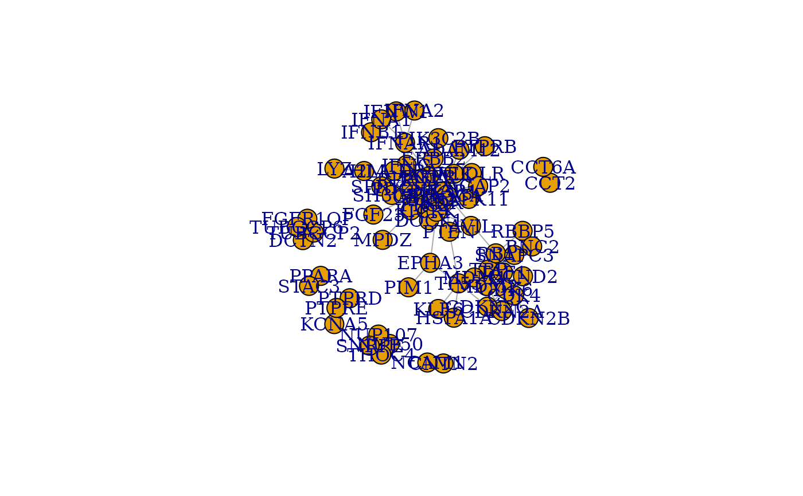

Generate sub-network mapping from a list of candidate genes
geneConnector.RdThis function generates sub-network mapping from a list of candidate genes
Usage
geneConnector(
geneList,
networkGraph,
directed = FALSE,
pValueAdj = "BH",
pValueCutoff = 0.05,
communityMethod = "ebc",
keepIsolatedNodes = FALSE
)Arguments
- geneList
character vector containing a list of candidate genes
- networkGraph
igraph network graph object. This igraph object contains curated network information
- directed
boolean value indicating whether the input network is directed or undirected (default = FALSE)
- pValueAdj
string for p-value correction method c("BH", "Bonferroni") as described in the details section (default = "BH")
- pValueCutoff
numeric value of p-value cutoff for linker nodes (default = 0.05)
- communityMethod
string for community detection method c("ebc","lec") as described in the details section (default = "ebc")
- keepIsolatedNodes
A boolean value indicating whether to keep isolated nodes in the netboxr result (default = FALSE)
Value
a list of returned netboxr results
netboxGraph: igraph object of NetBox algorithm identified network nodes and connections
netboxCommunity: igraph object of network community assignment
netboxOutput: data frame of NetBox algorithm identified network nodes and connections
nodeType: data frame of node types ("candidate" or "linker") in the NetBox algorithm indentified network.
moduleMembership: data frame of module (community) membership.
neighborData: data frame of information of nodes directly connected to candidate gene nodes.
Details
P-value correction methods include the Bonferroni correction ("bonferroni") or Benjamini & Hochberg ("BH"). Community detection methods include using edge betweeness score ("ebc") or using leading eigenvector method ("lec)
Author
Eric Minwei Liu, emliu.research@gmail.com
Examples
data(netbox2010)
sifNetwork<-netbox2010$network
graphReduced <- networkSimplify(sifNetwork,directed = FALSE)
#> Loading network of 9264 nodes and 157780 interactions
#> Treated as undirected network
#> Removing multiple interactions and loops
#> Returning network of 9264 nodes and 68111 interactions
geneList<-as.character(netbox2010$geneList)
results<-geneConnector(geneList=geneList,networkGraph=graphReduced,
pValueAdj='BH',pValueCutoff=0.05,
communityMethod='lec',keepIsolatedNodes=FALSE)
#> 274 / 517 candidate nodes match the name in the network of 9264
#> nodes
#> Only test neighbor nodes with local degree equals or exceeds 2
#> Multiple hypothesis corrections for 892 neighbor nodes in the network
#> For p-value 0.05 cut-off, 6 nodes were included as linker nodes
#> Connecting 274 candidate nodes and 6 linker nodes
#> Remove 208 isolated candidate nodes from the input
#> Final network contains 72 nodes and 152 interactions
#> Detecting modules using "leading eigenvector" method
names(results)
#> [1] "netboxGraph" "netboxCommunity" "netboxOutput" "nodeType"
#> [5] "moduleMembership" "neighborData"
plot(results$netboxGraph, layout = layout_with_fr)

write.table(results$netboxOutput,
file = "network.sif", sep = " ",
quote = FALSE, col.names = FALSE, row.names = FALSE
)
write.table(results$neighborData,
file = "neighborList.txt", sep = " ",
quote = FALSE, col.names = TRUE, row.names = FALSE
)
write.table(results$moduleMembership,
file = "memb.ebc.txt", sep = " ",
quote = FALSE, col.names = FALSE, row.names = FALSE
)
#
write.table(results$nodeType,
file = "nodeType.txt", sep = " ", quote = FALSE,
col.names = FALSE, row.names = FALSE
)
#